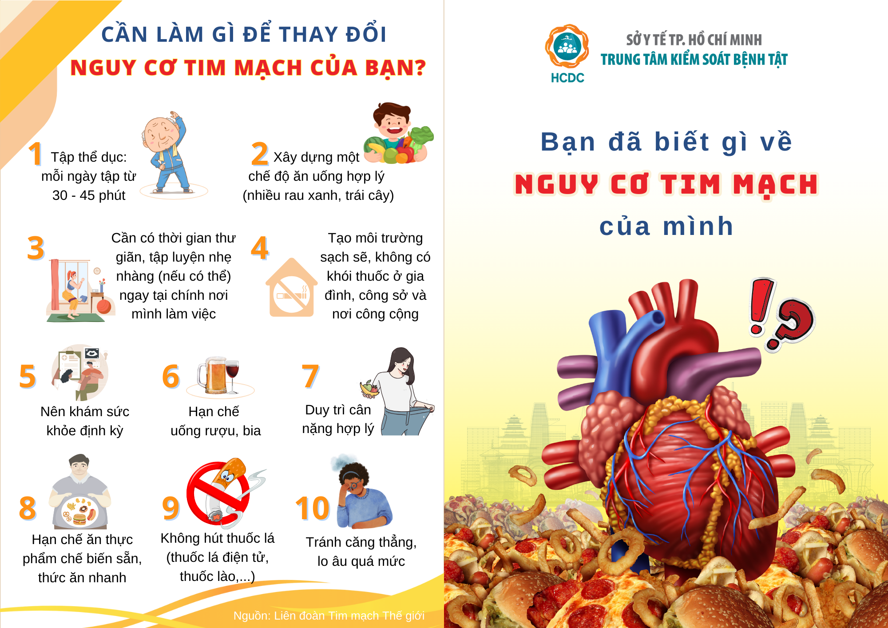

Tư vấn lối sống lành mạnh
Tư vấn lối sống lành mạnh là hướng dẫn và hỗ trợ bệnh nhân trong việc thực hiện những thay đổi trong những thói quen hằng ngày nhằm giảm thiểu nguy cơ của những bệnh không lây.
Tư vấn bệnh nhân:
Vận động thể lực
Chế độ ăn tốt cho tim mạch
Dừng hút thuốc lá và tránh sử dụng những đồ uống có cồn
Tuân thủ việc điều trị
Vận động thể lực
Tăng dần hoạt động thế chất đến mức độ vừa phải(vd: đi bộ nhanh) 5 ngày trong tuần ít nhất 30 phút mỗi ngày.
Kiếm soát cân nặng và tránh việc bị thừa cân bằng cách giảm thiểu những thức ăn nhiều calories và tập luyện thể dục đầy đủ.
Chế độ ăn tốt cho tim mạch
Muối (< 5g/ngày)
Trái cây và rau củ quả (5 đơn vị khoảng 400-500 gr/ngày)
Thức ăn nhiều dầu mỡ (nhỏ hơn 2 muỗng ăn/ngày)
Cá (ăn ít nhất 3 lần/ tuần, các loại cá như cá hồi, cá ngừ, cá thu)
Dừng hút thuốc lá và tránh sử dụng quá mức những đồ uống có cồn
Khuyến khích những người chưa sử dụng thuốc lá không hút thuốc
Khuyên và hỗ trợ những người hút thuốc lá trong việc từ bỏ hút thuốc lá
Khuyên những người sử dụng các chế phẩm khác của thuốc lá từ bỏ việc sử dụng
Tăng cường việc cai nghiện rượu
Không nên khuyên mọi người sử dụng đồ uống có cồn khi có những vấn đề về sức khỏe
Dừng hút thuốc lá và tránh sử dụng quá mức những đồ uống có cồn
Khuyên những bệnh nhân không sử dụng đồ uống có cồn khi có những nguy cơ sau:
Lái xe hoặc đang làm việc
Mang thai hoặc cho con bú
Đang điều trị thuốc có tương tác với đồ uống có cồn
Việc sử dụng đồ uống có cồn làm nặng thêm tình trạng bệnh lý
Khó khăn trong việc kiểm soát lượng uống vào
Tuân thủ điều trị
Hướng dẫn bệnh nhân dụng thuốc theo toa
Cho bệnh biết liều lượng thích hợp
Giải thích số lần uống thuốc trong ngày
Dán nhãn và đóng gói thuốc
Kiểm tra lại sự hiểu biết của bệnh nhân trước khi rời phòng khám
Giải thích sự quan trọng của việc duy trì việc dùng thuốc theo toa( ngay cả khi không có triệu chứng)

Quản lý bệnh lý tim mạch trong chăm sóc sức khỏe ban đầu
4 hành vi nguy cơ chính của bệnh tim mạch:
Chế độ ăn không lành mạnh
Hoạt động thể chất không đầy đủ
Sử dụng thuốc lá
Sử dụng có hại đồ uống có cồn
Chế độ ăn không lành mạnh
Nguy cơ bệnh tim mạch tăng lên bởi một bữa ăn không lành mạnh, điển hình như ăn ít trái cây, rau củ quả và dung nạp một lượng lớn muối, chất béo, đường.
Thành phần của một chế độ ăn lành mạnh phụ thuộc vào nhu cầu cá nhân (tuổi tác, giới tính, lối sống, mức độ, hoạt động thể chất) và phong tục tập quán và thực phẩm sẵn có
Chế độ ăn không lành mạnh
Tuy nhiên những yếu tố cơ bản của một chế độ ăn uống lành mạnh bao gồm những yếu tố không đổi sau đây:
Đa dạng loại thức ăn
Ít nhất 400g (5 đơn vị) rau củ quả và trái cây mỗi ngày
Ít hơn 5g muối mỗi ngày
Tổng năng lượng nạp vào do chất béo <30% mỗi ngày
Tổng năng lượng nạp vào do đường tự do <10% mỗi ngày
Hoạt động thể chất không đầy đủ
WHO định nghĩa hoạt động thể chất là bất kỳ chuyển động nào được tạo ra bởi các cơ xương của cơ thể con người và sử dụng năng lượng.
Hoạt động thể chất bao gồm một loạt các chuyển động cơ thể và hoạt động hàng ngày, chẳng hạn như chơi đùa, làm việc, đi bộ, công việc nhà và các hoạt động giải trí.
Hoạt động thể chất bao gồm cả tập thể dục, một phân nhóm của hoạt động thể chất được lập kế hoạch, có cấu trúc và lặp đi lặp lại, với mục đích cải thiện hoặc duy trì thể lực
Hoạt động thể chất không đầy đủ
Lợi ích của hoạt động thể chất
Giảm nguy cơ tăng huyết áp, đau tim, đột quỵ, tiểu đường, nhiều loại ung thư và trầm cảm
Kiểm soát cân nặng, kiểm soát bệnh tiểu đường
Cải thiện huyết áp, cải thiện mức cholesterol và các lipid máu khác
Hoạt động thể chất không đầy đủ
Mức độ hoạt động thể chất đối với người lớn
Ít nhất 150 phút/ tuần hoạt động thể chất vừa phải (chẳng hạn như đi bộ nhanh, leo cầu thang, khiêu vũ, làm vườn hay làm việc nhà…
Hoặc ít nhất 75 phút hoạt động thể chất mạnh (làm vườn nhiều, chạy, đạp xe nhanh, bơi nhanh hoặc chơi thể thao…
Hoặc sự kết hợp giữa hoạt động thể chất mạnh và vừa phải
Để có thêm lợi ích sức khỏe, nên tăng lên 300 phút mỗi tuần hoạt động thể chất vừa phải. Những người bị suy giảm khả năng vận động nên thực hiện hoạt động từ 3 ngày trở lên mỗi tuần để cải thiện khả năng giữ thang bằng và ngăn ngừa té ngã.
Sử dụng thuốc lá
Trong khói thuốc lá có chứa ít nhất 250 hóa chất độc hại, trong đó ít nhất 69 chất được biết là gây ung thư.
Nó gây ra 6 triệu ca tử vong mỗi năm, 10% số ca tử vong này là do hít phải khói thuốc thụ động và 10% tổng số ca tử vong do bệnh tim mạch.
Các sản phẩm của thuốc lá có thể chia thành 2 dạng:
- thuốc lá khói (trong thuốc lá điếu, xì gà, tẩu và tẩu nước)
- thuốc lá không khói (trong thuốc lá nhai và thuốc hít).
=> Tư vấn: bỏ thuốc lá vì mang lại nhiều lợi ích khác nhau như lợi ích sức khỏe, tài chính và xã hội
Bỏ thuốc lá
Lợi ích sức khỏe
Giảm tình trạng ho và khó thở sau khi bỏ hút thuốc vài tháng
Giảm nguy cơ đau tim và đau thắt ngực sau 1 năm bỏ thuốc
Giảm nguy cơ mắc các vấn đề khó mang thai, sinh non, nhẹ cân, sẩy thai, hen và bệnh tai giữa ở trẻ em do hút thuốc lá thụ động
Lợi ích xã hội
Môi trường, quần áo, hơi thở của người cai thuốc có mùi dễ chịu hơn
Sự cô lập xã hội giảm đi, lòng tự trọng của họ sẽ tăng lên
Năng suất làm việc cao hơn
Lợi ích tài chính
Tiết kiệm đáng kể số tiền chi cho thuốc lá
Tiết kiệm chi phí chăm sóc sức khỏe tiềm ẩn
Sử dụng có hại đồ uống có cồn
Việc sử dụng rượu có hại, khi được định nghĩa là một vấn đề sức khỏe cộng đồng, đề cập đến “việc uống rượu gây ra những hậu quả bất lợi cho sức khỏe và xã hội cho người uống rượu, những người xung quanh người uống rượu và xã hội nói chung, cũng như các kiểu uống rượu có liên quan đến việc tăng nguy cơ tác dụng phụ.”
Việc sử dụng có hại bao gồm việc uống rượu ở mức độ cao mỗi ngày, cũng như uống rượu một lần hoặc lặp đi lặp lại dẫn đến ngộ độc.
Không có định nghĩa nào về việc sử dụng rượu an toàn hay không có hại.
Tuy nhiên, các cá nhân thường được coi là có nguy cơ thấp hơn về những hậu quả tiêu cực của việc sử dụng rượu nếu họ uống không quá hai đơn vị rượu mỗi ngày và không uống ít nhất hai ngày trong tuần.
Sử dụng có hại đồ uống có cồn
- Uống rượu ở mức độ cao và thường xuyên uống nhiều rượu có liên quan đến việc tăng nguy cơ mắc bệnh tim mạch, vì việc sử dụng rượu có hại sẽ làm tổn thương cơ tim, làm tăng nguy cơ đột quỵ và có thể gây rối loạn nhịp tim.
Thay đổi hành vi
Hiểu về thay đổi hành vi
Thay đổi hành vi là một vấn đề phức tạp và không phải là sự kiện diễn ra một lần mà là một tập hợp các hoạt động các giai đoạn khác nhau mà qua đó một người trải qua.
Hiểu được sự thay đổi hành vi rất quan trọng đối với các nhà cung cấp dịch vụ chăm sóc sức khỏe ban đầu vì họ thường là đầu mối liên hệ đầu tiên để bệnh nhân tiếp cận hệ thống y tế.
Thay đổi hành vi
Tư vấn thay đổi hành vi thông qua can thiệp ngắn
- Can thiệp ngắn là sự tương tác ngắn từ 3 đến 20 phút giữa nhân viên y tế và bệnh nhân
- Kỹ thuật giao tiếp và Phỏng vấn tạo động lực có thể được sử dụng làm phương pháp tiếp cận để thực hiện các biện pháp can thiệp ngắn gọn.
Thay đổi hành vi
Tư vấn tạo động lực
- Trong tư vấn tạo động lực, người tư vấn không cố gắng thuyết phục người đó thay đổi mà thay vào đó hướng dẫn họ tự đưa ra kết luận và rút ra những động lực bên trong duy nhất của người đó.
HEARTS: Technical package for cardiovascular disease management in primary health care: Healthy-lifestyle counselling
HEARTS: A guide for tobacco users to quit
VAI TRÒ, TRÁCH NHIỆM KHI LÀ MỘT NHÂN VIÊN Y TẾ TUYẾN CƠ SỞ
Xây dựng kế hoạch chương trình truyền thông giáo dục sức khỏe
Thực hiện truyền thông giáo dục sức khỏe
Xây dựng kế hoạch và báo cáo chương trình truyền thông giáo dục sức khỏe tại cộng đồng
Phân tích tình hình, xác định vấn đề sức khỏe ưu tiên
- Thu thập thông tin (chỉ số dân số, chỉ số về kinh tế văn hóa xã hội, chỉ số về sức khỏe bệnh tật, vệ sinh môi trường, chỉ số về dịch vụ y tế )
=> Xác định những vấn đề nào đang tồn tại
Xác định mục tiêu
Mục tiêu tổng quát
Mục tiêu cụ thể (đối tượng – hành vi – điều kiện – mức độ)
Xác định đối tượng
Xây dựng kế hoạch và báo cáo chương trình truyền thông giáo dục sức khỏe tại cộng đồng
Xác định nội dung
- Phù hợp mục tiêu, đối tượng
- Nội dung từ những nguồn tham khảo đáng tin cậy
- Từ ngữ gần địa phương, tránh dùng thuật ngữ chuyên môn
- Đảm bảo đầy đủ, ngắn gọn, sức tích, dễ hiểu, dễ nhớ
Xác định giải pháp (phương pháp – phương tiện thực hiện)
Kế hoạch thực hiện
Xây dựng kế hoạch và báo cáo chương trình truyền thông giáo dục sức khỏe tại cộng đồng
Lượng giá
Kết quả thực hiện
Nhận xét, kết luận
Nhận xét kết quả thực hiện, quá trình thực hiện
Rút ra nhận xét, kết luận chung về chương trình (thành công? hiệu quả? Các mặt đạt/chưa đạt được?)
Đề xuất , kiến nghị
Thực hiện truyền thông giáo dục sức khỏe
Tổ chức những buổi giáo dục sức khỏe cho người dân, đặc biệt ở những nhóm dân số cần chú ý đến những yếu tố nguy cơ này:
Tăng huyết áp, đái tháo đường
Bệnh tim mạch, hô hấp mãn tính
Tổ chức những chuyên đề sinh hoạt về tác hại của thuốc lá và rượu bia tại những trường học trong địa bàn
Báo chí, phát thanh, truyền hình, mạng xã hội
Thông tin: poster, tờ bướm, khẩu hiệu, panô, biểu ngữ, xe loa, triển lãm, phòng truyền thông, tranh lật
Góc giáo dục sức khỏe

Thực hiện truyền thông giáo dục sức khỏe
- Cho nhóm nhỏ (nhóm đối tượng có nguy cơ):
Nói chuyện sức khỏe nhóm nhỏ
Thảo luận nhóm
Tọa đàm
Biểu diễn và thực tập
Sắm vai
Tham quan, thực địa
Văn nghệ nhóm nhỏ
Thực hiện truyền thông giáo dục sức khỏe
- Cho cá nhân:
Nói chuyện trực tiếp tại cơ sở hoặc đến thăm tại nhà (vãng gia)
Nói chuyện qua điện thoại
Trả lời thư
Tư vấn thay đổi lối sống lành mạnh đối với cá nhân
Khi người dân đến với trạm y tế và có mong muốn thay đổi thói quen lối sống, nhân viên y tế tuyến cơ sở không chỉ cung cấp thông tin và lời khuyên mà còn hỗ trợ tâm lý, giúp bệnh nhân đạt được mục tiêu cải thiện sức khỏe và ngăn ngừa các bệnh mãn tính
Giúp bệnh nhân đặt mục tiêu và lập kế hoạch để bắt đầu thực hiện một số thay đổi lối sống của họ theo hướng tốt hơn.
Cung cấp những thông tin tư vấn thiết thực để hỗ trợ trong quá trình thay đổi lối sống.
Thu hút bệnh nhân vào buổi tư vấn và dành thời gian để họ chủ động chia sẻ ý tưởng về những dự định thay đổi thói quen ăn uống như thế nào.
Sự hỗ trợ về mặt xã hội
Áp dụng 5As trong can thiệp thay đổi lối sống
Hoạt động thể chất
Hỏi (Ask): Nghề nghiệp (ít vận động hoặc tích cực)? Trong tuần qua, có bao nhiêu ngày bạn đã hoạt động thể chất với tổng thời gian từ 30 phút trở lên?
Tư vấn (Advise): Tất cả người lớn nên hoạt động thể chất ít nhất 2 tiếng rưỡi (150 phút) mỗi tuần, ưu điểm của hoạt động thể chất
Đánh giá (Access): Bạn đã sẵn sàng bắt đầu vận động cơ thể nhiều hơn chưa? Bạn có nghĩ mình sẽ thành công trong việc tăng mức độ hoạt động của mình không?
Hỗ trợ (Assist): Giúp bệnh nhân xây dựng kế hoạch bắt đầu tăng cường hoạt động thể chất, cung cấp tư vấn thực tế
Sắp xếp (Arrange): Theo dõi: quyết định thời gian, phương pháp và lên lịch cho cuộc hẹn tiếp theo, hỏi về những thành công và thách thức.
Áp dụng 5As trong can thiệp thay đổi lối sống
Sử dụng rượu bia
Hỏi (Ask): Xác định tình trạng và mức độ sử dụng đồ uống có cồn (Bạn có thường xuyên uống đồ uống có cồn không? Bình thường một ngày bạn uống bao nhiêu đồ uống có cồn?)
Tư vấn (Advise): Tư vấn tác hại của việc uống rượu bia, tránh uống nhiều hơn hai đơn vị trong bất kỳ ngày nào và không uống bất kỳ loại rượu nào trong ít nhất hai ngày mỗi tuần
Đánh giá (Access): Đánh giá sự sẵn sàng từ bỏ sử dụng đồ uống có cồn
Hỗ trợ (Assist): Cung cấp tài liệu giáo dục sức khỏe và thông tin về các nguồn lực bổ sung như đường dây trợ giúp, tư vấn, nhóm hỗ trợ
Sắp xếp (Arrange): Lên lịch cho cuộc hẹn tiếp theo
KHẢ NĂNG ĐÁP ỨNG CỦA Y TẾ TUYẾN CƠ SỞ
Cung cấp thông tin bao gồm: bảng lật , tờ rơi thông tin, áp phích, ứng dụng di động
Nhu cầu nguồn lực
Nhân lực: Bác sĩ hoặc điều dưỡng
Bảo đảm trang thiết bị thiết yếu và từng bước đầu tư trang thiết bị hiện đại
Cung cấp các loại thuốc
Cơ sở vật chất khác: Hệ thống lưu trữ hồ sơ bệnh án, chuyển tuyến cơ sở